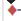

Gantt charts¶
Planning¶
This screen allows to define project planning and follow progress.
It is composed with two areas:


Note
- This screen offers many features that will be described in the next sections.
Gantt (Planning)
3 - Activity planning calculation
- Click on
 to start the activity planning calculation. (See: Project planning)
to start the activity planning calculation. (See: Project planning)
4 - Buttons
- Click on
 to store planned dates. (See: Project planning)
to store planned dates. (See: Project planning) - Click on
 to get a printable version of the Gantt chart.
to get a printable version of the Gantt chart. - Click on to export Gantt chart in PDF format. (See: Export planning to PDF)
- Click on
 to export planning to MS-Project xml format.
to export planning to MS-Project xml format. - Click on
 to define the columns of progress data that will be displayed. (See: Progress data view)
to define the columns of progress data that will be displayed. (See: Progress data view) - Click on
 to create a new item. (See: Project planning)
to create a new item. (See: Project planning)
Task list area¶
The task list area is composed with:
Task list & progress data view
3 - Area splitter
The splitter is used to show or hide the progress data view.
Note
- The progress data view is hidden by default.
- Move the splitter on your right to display them.
Task list¶
The task list displayed planning elements in hierarchical form.
Tasks are regrouped by project and activity.
Projects displayed
- Projects displayed depends on selection done with the project selector.
- See: Top bar
Task list zone
1 - Hierarchical level
- Click on
 or
or  to adjust the hierarchical level displayed.
to adjust the hierarchical level displayed.
2 - Icon of element
- An icon is displayed on the left of the corresponding element.
3 - Group row
- Click on or on the group row to expand or shrink the group.
4 - Show WBS
- Click on “Show WBS” to display the WBS number before the names.
5 - Item name
- Click on a row will display the detail of the item in the detail window.
6 - Checkbox «Show closed items»
- Flag on «Show closed items» allows to list also closed items.
Progress data view¶
The progress data view allows to show progress on project elements.
For each planning element, the progress data are displayed at them right.
Progress data view
1 - Group row
- The group row has a gray background.
- Used to display consolidated progress data for tasks.
2 - Task row
- The task row has a white background.
- Used to display task progress data.
3 - Define the columns of progress data that will be displayed
- Click on to define the columns displayed.
- Click on OK button to apply changes.
Column selection
- Use checkboxes to select or unselect columns to display.
Columns order
- Use the
to reorder columns with drag & drop feature.
Popup list - Select columns
Gantt chart view¶
The Gantt chart view is a graphic representation of progress data.
For each planning element, a Gantt bar is displayed at them right.
Gantt chart view
1 - Scale
- Scale available: daily, weekly, monthly or quarter
- The Gantt chart view will be adjusted according to scale selected.
2 - Start and end dates
- Change the starting or ending date to limit the display of Gantt chart view.
3 - Saving dates
- Save previous dates to retrieve them on every connection.
4- Gantt bars
- Overdue tasks appear in red, others in green.
Red bar
ConditionPlanned end date or (Real end date if completed task) > Validated end date
Purple bar
- The planning calculator tries to plan, the remaining work on the task assigned to a resource within the project affection period.
- If remaining work on the task can’t be planned, a purple bar appears in the Gantt view.
Consolidation bar
- Displayed at group row level.
- Graphic display of consolidated dates for planning elements group.
- Start with the smallest start date and end with the biggest end date, either with planned or real dates.
Real work progress
- The line that cross a Gantt bar displays the percentage of actual progress.
- The length of the line represents the percentage of completion, based on the percentage of actual progress against the length of Gantt bar.
Note
- Move the cursor over the bar to display item name and planned dates.
5 - Dependency links
- Dependencies between planning elements are displayed with an arrow.
6 - Milestone
Milestones appear as diamonds, filled if completed, empty if not.
Color of diamond depends on milestone progress.
Ongoing milestone and in times
Completed milestone and in times
Ongoing milestone and delayed
-
Condition Planned end date > Validate end date
Completed milestone and delayed
-
Condition Real end date > Validated end date
-
7 - Show resources
- Click on “Show resources” to display resources assigned to tasks.
Global parameter “Show resource in Gantt”
- This parameter defines the option availability and whether the resource name or initial is displayed.
8 - Current date
- Yellow column indicates the current day, week, month or quarter, according to scale selected.
Project planning¶
Project planning and activity planning calculation can be done in the Gantt.
Project planning
1 - Add a new planning element
- Allows to create a new planning element.
- The created element is added in the Gantt and detail window is opened.
- The detail window allows to complete entry.
Popup menu - Create a new item
Note
Planning elements management
- Planning elements can be managed with their own dedicated screen.
- Test session and Meeting elements can be added to the planning with their own dedicated screen.
2 - Reorder planning elements
- The selector allows to reorder the planning elements.
3 - Indenting element
- Click on an element, the detail window will be displayed.
- Two new buttons are displayed in the header, they allow to increase or decrease indent of an element.
Increase indent
- The element will become the child of the previous element.
Decrease indent
- The element will be moved at the same level than the previous element.
4 - Dependency links
- To create a dependency link, clicked and hold on a graphic element, the mouse cursor changes to .
- Move mouse cursor on graphic element that will be linked and release the button.
Note
Dependency links management
- Dependency links can be managed in element screen.
- See: Predecessor and Sucessor element sections.
5 - Activity planning calculation
- Click on to start the activity planning calculation.
Automatic run plan
- Check the box to activate automatic calculation on each change.
6 - Store planned dates
- Allows to store planned dates into requested and validated dates.
- In other words, this feature allows to set baseline dates and preliminary dates from calculated planning.
Action available
- Always: Always overwrite existing values.
- If empty: Store only if the value is empty.
- Never: Values are not stored.
Projects portfolio¶
This screen displays Gantt chart from projects portfolio point of view.
It displays projects synthesis and project’s dependencies, without project activities.
Note
- This section describes specific behavior for this screen.
- All others behaviors are similar to Planning screen.
Gantt (Projects portfolio)
1 - Show milestones
- It is possible to define whether milestones are displayed or not.
- If they are displayed, then It is possible to define the type of milestone to be displayed or displayed all.
Resource Planning¶
This screen displays Gantt chart from the resources point of view.
Assigned tasks are grouped under resource level.
Gantt bars
- For activities, the Gantt bar is split in two:
- Real work in grey.
- Reassessed work in green.
Hint
- This makes appear some planning gap between started work and reassessed work.
Dependencies behavior
- Links between activities are displayed only in the resource group.
- Links existing between tasks on different resources are not displayed.
Note
- This section describes specific behavior for this screen.
- All others behaviors are similar to Planning screen.
Gantt (Resource planning)
1 - Show project level
- Tasks can be grouped by project.
- Click on “Show project level” to display project level.
2 - Show left work
- Left work can be displayed at right from Gantt bar.
- Click on “Show left work” to display left work for each item.
Export planning to PDF¶
Allows to export planning to PDF format.
Export contains all details and links between tasks.
| Field | Description |
|---|---|
| Orientation | Page orientation. |
| Zoom | Allows to fit planning on page. |
| Repeat headers | Planning can be span multiple pages. |
Note
Technical points
- This new feature will execute export on client side, in your browser.
- Thus the server will not be heavy loaded like standard PDF export does.
- It is highly faster than standard PDF export.
- Therefore, this feature is hightly dependant to browser compatibility.
Note
Browser compatibility
- This new feature is technically complex and it is not compatible with all browsers.
- Enabled only with Chrome browser as of now.
- Else, the old export feature will be used.
Note
Forced feature activation (deactivation)
- To enable this feature for all browsers, add the parameter $pdfPlanningBeta=’true’; in parameters.php file.
- To disable if for all brosers (including Chrome), add the parameter $pdfPlanningBeta=’false’;
- Default (when $pdfPlanningBeta parameter is not set) is enabled with Chrome, disabled with other browsers